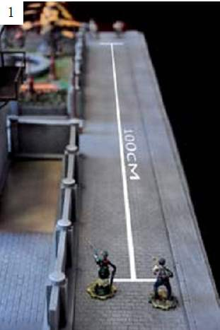
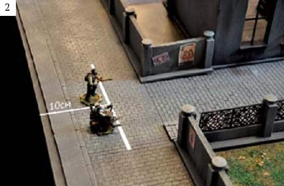

Основные парвила и приложения
Основные парвила и приложения
Уничтожение всех вражеских персонажей, капитуляция противника или выполнение игрового задания.
На самом деле цель игры – доставить игрокам удовольствие. Поэтому, если в игре возникли какие-нибудь споры, вызванные ситуацией, не предусмотренной настоящими правилами или позволяющая толковать их двояко – решите их, как и подобает Леди и Джентльменам викторианской эпохи – дуэлью на кубиках. Ведь удовольствие, полученное обоими игроками весомее, чем победа любой ценой.
Руководитель проекта: Олег Казачков «pzo»
Производственный
директор: Александр Дерябин «Zippo», Скульптор, автор большой
части
линейки миниатюр, один из авторов и основателей
проекта
Арт-директор: Михаил Суворов «Mixiw», дизайнер, автор дизайнерских решений проекта
Pr – директор: Александра
Ковалёва «Aurora», журналист, главное контактное лицо проекта
Эксперт: Александр Усвицкий «Korand», разработка игровой и
турнирной систем, разработка и
внедрение отдельных аспектов
проекта
Советник по юридическим вопросам: «Mgrishin» Максимилиан Гришин, главный юрист проекта
Художники и дизайнеры:
Суворов Михаил «Mixiw», дизайн, верстка, иллюстрации
Андрей Кротков «Goodwin», художник по миниатюре,
автор потрясающего презентационного
стола для проекта
Дмитрий Фесечко «Lynx», художник по миниатюре, автор покраски
всех миниатюр проекта,
и иллюстраций для книги игрока
Вячеслав Базлов «VirusVinci», привлечённый художник, концепты персонажей и иллюстрации
IT:
Станислав Игнатьев «Колдун Игнат», администратор сайта, автор сайта проекта
PR:
Александра Ковалёва «Aurora», PR-директор
Александр Елаев
«Rottur», копирайтер, автор текстов для блога и сайта,
художественных
вставок для книги игрока
Дарья Пуршева
«Pursh», контент-менеджер, продвижение и поддержка проекта в
сети,
редактура
Игровая механика:
Александр Усвицкий
«Korand», эксперт, обработка игровых правил, разработка и
внедрение
отдельных элементов игровой системы
Александр
Кубраков «Yuh», ведущий игровой технолог, разработка рабочей
модели правил
для игровой системы
Скульпторы:
Александр Дерябин «Zippo», скульптор
Сергей Бондар «Anastas», привлечённый скульптор, автор большей части миниатюр проекта
Элла Мазуренко «Ellis», привлечённый скульптор, автор миниатюр для Victorium’a
Дмитрий Иванов «Dmitry», привлечённый скульптор, автор миниатюр для Victorium’a
Равиль Кулахметов «Ромыч», автор и разработчик моделей техники для проекта
Художественные истории:
Виктор Смирнов «SimpleGags», ведущий автор художественного
оформления проекта, авто
большей части художественных
описаний персонажей, истории мира
Кирилл Мелёхин «Rarog», автор художественного оформления
проекта, автор историй
персонажей
Евгений Казимиров «Nicklaus», автор историй персонажей
Мы благодарим наших партнеров:
Портал – мастерскую Craft-Online
craft-online.ru
В лице создателя сайта — Романа
Пасечника
Место где зародилась
сама идея нашего проекта, форум мастеров своего дела.
Роман
всячески поддерживал и помогал развитию нашего проекта на самых
ранних стадиях.
Игровой клуб “Портал”
В лице — Филиппа
Ларина и Сергея Ляпенкова
Первый официальный клуб – партнёр.
Благодарим за проведение тест-турниров, и будущих
турниров
проекта.
Портал Steampunker.ru
www.steampunker.ru
В
лице руководителя проекта — Петра Дидевича
Крупнейший сайт
стимпанк-сообщества, на котором мы демонстрировали развитие
нашего
проекта. Благодарим за поддержку и дружественные
отношения с крупнейшим стимпанк-
сообществом в рунете.
Портал Warforge
www.warforge.ru
В лице
— Павла Крутова «Zef»
Крупнейший портал по варгеймам и не
только, в России. Благодарим за создание отдельного
раздела
для нашего проекта, за поддержку и дружественное отношение.
Сайт steamroller.ru
За создание темы для нашего проекта, за поддержку
Сайт www.waaagh.ru
За создание темы для нашего проекта, за поддержку
Литейную мастерскую
В лице мастер-литейщика
— Сергея «NikS» Никитина
Благодарим за прекрасное литьё
пилотных выпусков миниатюр проекта
Литейную мастерскую
В лице мастер-литейщика
— Дмитрия «Parasit_99».
Благодарим за прекрасное литьё
миниатюр проекта
Портал Podgames
www.podgames.ru
В лице
руководителя портала — Александра «Krutomen» Седых.
За
поддержку и рекламу нашего проекта, а так же благодарим
журналистов: Ивана «KOT_ЭЭЭЭ»
и Валеру Акимова.
А так же благодарим всех участников тест – турниров:
Korand, Hella, Альбина, Adrammelez, Ромыч, Лилия, Lynx, Skarm,
Csame, Havkai, Anastas, Goodwin,
Dragon, PhillipRus, Ookami,
Sigvat.
И просто всех сочувствующих, всех кто принимал участие в разработке, предлагал идеи, участвовал в обсуждениях, благодаря вам мы смогли реализовать и создать столь качественный продукт! Спасибо вам!
В XIX веке человечество совершило технологический скачок.
Революция в науке шла по двум направлениям - техническому и генетическому. Люди научились приручать силы природы, но слишком увлеклись. Не всем удалось все остаться людьми.
Еще в середине 50-х годов тибетские монахи за тенами своих неприступных монастырей проводили страшные опыты, пытаясь скрестить людей и животных, экспериментируя с живой и неживой плотью. В феврале 1882 года Николас Теззло впервые использовал в электродвигателе вращающееся магнитное поле.
В 1895 году в трущобах Парижа впервые схлестнулись нелюди.. и те, кто ещё был человеком. Начался отсчет эпохи «Викториума». Нового века человечества.
Темного или светлого?
Решать Вам.
Сыграем?
«Викториум» - настольная военно-тактическая игра для 2 и более игроков.
Действие игры происходит в альтернативно существующей и развивающейся параллельно нашей Вселенной, в которой так же существует планета Земля, на момент действия игры находящаяся в определенном временном периоде, в конце 19 века. Ее историческое и технологическое развитие пошло не так, как в нашем мире и поэтому при всех знакомых нам континетах, странах и расах населяют эту реальность зачастую вовсе чуждые и необыкновенные для нас персонажи.
Каждая отдельная игра «Викториума» - это не глобальная битва с участием сотен бойцов, а локальная схватка нескольких персонажей, каждый из которых имеет свою уникальную историю и набор способностей.
Историю не всегда пишут полководцы…
Для того, что бы начать играть, нужно определиться с балансом враждующих команд. Для удобства игроков мы ввели текущую стоимость каждого из персонажей, которая указана в игровом приложении “Стоимость персонажей”. В начале игры игроки определяются с суммой очков, которую каждый из них может потратить на сбор и комплектацию отряда. Эта сумма впредь будет называться форматом игры.
В каждый отряд можно набрать только по одному экземпляру каждого персонажа.
Игра происходит на участке ровной поверхности (обычно столе). Основным параметром является расстояние между зонами расста новки (начальной позиции персонажа). Это расстояние должно быть больше (или равным) 50 см. Рекомендуемым размером стола является 90*120 сантиметров, при этом между игроками и их зонами расстановки находится длинный участок поля. (см.рис. 1)

Расстановка ландшафта на поле боя осуществляется игроками в порядке, определенном броском кубика d20. Элементы ландшафта расставляются по договоренности игроков либо симметрично, тогда на поле боя выставляется сразу по два элемента ландшафта симметрично относительно средней линии поля боя, либо асимметрично, тогда игроки выставляют по одному элементу в любой точке поля независимо друг от друга. Заметьте, что некоторые элементы ландшафта требуют использования специальных правил (эти правила описаны в приложении “Специальная местность”).
Кроме элементов ландшафта, вам понадобятся миниатюры, правила и прочее. Эти необходимые элементы игры описаны в приложении “Игровые элементы”. Также в нем вы найдете способы применения и иллюстрации. В основных правилах вы можете встретить ссылку на тот или иной элемент из приложения.
Итак, каждый игрок набирает себе необходимое количество персонажей, но суммарная стоимость персонажей не должна превышать формата игры..
Далее требуется составить линейку очередности ходов. Для этой цели игроки бросают по одному кубику d20. Игрок, выбросивший наибольшее число на кубике, выставляет в линейку очередности своего персонажа, который будет ходить первым. Следом за ним второй игрок выставляет своего персонажа. Эта пара действий повторяется до тех пор, пока не определится очередь ходов для всех персонажей, участвующих в схватке.
Линейка персонажей отображается последовательностью специальных карточек персонажей. Использование этих карточек описано в приложении “Игровые элементы”- В6.
В случае если у игроков различное количество персонажей, то игрок с меньшим количеством бойцов может пропустить свою очередь в линейке очередности и не выставлять своего бойца. В этом случае следующим своего персонажа выставляет другой игрок. Количество пропусков в линейке должно быть равно разности количеств персонажей у игроков.
Вы с вашим оппонентом по очереди (определяемой линейкой очередности) выставляете на противоположных концах игрового поля в 10см зоне от края поля ваших персонажей, по одному. (зона расстановки должна быть уменьшена, если между зонами менее, чем 50см) (см. рис.2)

Прежде чем переходить к самой игре, давайте определимся с игровыми персонажами и их основной характеристикой.
Любые свойства и особенности каждого игрового персонажа указаны в его описании. Игровым персонажем является любая действующая миниатюра (будь то танк или змея).
Описание каждого персонажа состоит из следующих частей:
Имя
Регион
Часть света, определяющая внешний вид миниатюры бойца, называется регионом. Таких регионов всего три: «Русская Империя» (“РИ”), «Коалиция Европейских стран» (“ЕС”), «Азиатский Альянс» (“АА”).
Класс
Все персонажи делятся на пять классов:
Человек
Обычный человек, не подвергавший свое тело никаким механическим или биохимическим модификациям.
Механизм
Механическое существо, созданное человеком или другим механизмом, на 100% состоящее из неодушевленной материи.
Механоид
Человек, подвергший свое тело модификациям с помощью механических элементов, либо механизм, включивший в свою структуру живую материю.
Геном
Генетически созданное на основе животных или растений существо. На 100% состоит из живой материи
Трансген
Человек, подвергшийся генетическим либо биохимическим модификациям, либо геном, в котором преобладает человеческий материал.
Основное оружие
Каждый персонаж использует одно или более оружие. Использование револьверов и винтовок требует отдельных правил, которые описаны в разделе “Стрелковое оружие”. Остальные типы оружия никак не влияют на игру и не имеют специальных правил, если обратное не описано в какой-то способности.
Способности
Способность - умение персонажа, которое применяется во время игры. Заметьте, что в “Викториуме” правильность использования уникальных способностей является основной частью игры. Описание способностей и их классификации описаны далее в разделе “Способности”.
Описание персонажа, изложенное выше, определяет способ его применения, однако состояние определяется основной характеристикой персонажей в “Викториуме”- “Очками жизнедействия”.
ОЖ, или очки жизнедействия – самая важная характеристика персонажа. Расходуя свои ОЖ, персонаж может передвигаться и применять способности. По определению, у любого персонажа максимальное количество (уровень) ОЖ равно 40. Если уровень ОЖ персонажа достигает 0, то персонаж выбывает из боя (гибнет). Этот персонаж убирается из линейки очередности ходов, а его миниатюра покидает поле боя. Заметьте, что в некоторых случаях важно отметить место гибели персонажа. При любом возвращении персонажа в бой (например, воскрешение), его очередь наступает там же, где была определена изначально.
Прежде чем переходить к самой игре, давайте определимся с игровыми персонажами и их основной характеристикой.
После расстановки начинается самое интересное: Битва! Последовательность наступления ходов персонажей определяется линейкой очередности. После последнего персонажа в линейке наступает ход первого персонажа в линейке.
Ход персонажа
Ход персонажа – период времени с момента, когда было объявлено окончание хода предыдущего персонажа и до момента, когда игрок объявит об окончании своего хода.
Алгоритм хода персонажа
Начало хода персонажа
Уровень ОЖ персонажа становится равным текущему максимальному значению (этот процесс также называется восполнением ОЖ).
Определяется количество ОЖ, которое персонаж может израсходовать в свой ход. Это количество ОЖ называется количеством активных ОЖ. Игрок бросает два кубика D20 (двадцатигранных). Сумма выпавших значений на кубиках и есть количеством активных ОЖ.
Использование активных ОЖ на
способности или движение. Эти два вида действий требуют
расходование активных ОЖ, при этом затраченное количество ОЖ
вычитается из текущего уровня ОЖ персонажа.
Движение
и применение способностей персонажем могут чередоваться в
произвольном порядке, пока не закончатся все активные ОЖ,
либо пока игрок не заявит об окончании хода. Любое действие
персонажа, которое уменьшает текущий уровень ОЖ до
отрицательного значения, не может быть применено.
Способности и движение персонажа описаны в соответствующих
разделах: “Способности” и “Движение”.
Окончание хода. Игрок объявляет о завершении своего хода.
Пример:
Начинается ход персонажа А, и у него текущее значение ОЖ становится равно 40, даже если до этого оно было меньше. После чего определяется количество активных ОЖ (кидается два кубика). Допустим, что выпадает сумма в 25 ОЖ. После использования нескольких способностей и передвижения, на которые было потрачено 20 ОЖ, у него остается еще 20 ОЖ (40-20=20), из которых он может потратить еще 5 (25-20=5). В данном примере персонаж не может использовать способность, требующую 6 ОЖ- у него нет столько активных ОЖ. Однако он может потратить 5 ОЖ на движение, но при этом у него останется 15 ОЖ (20-5), из которых уже ничего не потратить- нужно заканчивать ход. Заметьте, что персонаж останется с 15 ОЖ на целый раунд (до следующего восполнения), а значит его будет достаточно легко убить. В «Викториуме» очень важно с умом расходовать ОЖ, потому что его количество определяет живучесть вашего персонажа.
Раунд – совокупность ходов всех действующих персонажей.
Раунд начинается с началом хода персонажа и заканчивается с началом его же хода, когда все остальные персонажи сделают по одному ходу. Линейка очередности по сути иллюстрирует раунд для первого персонажа в линейке.
Передвигаться по полю боя могут все персонажи, если в их описании не указано обратного или на них не оказывает действие эффект какой-либо способности, ограничивающей передвижение персонажа.
1 шаг персонажа по умолчанию равен одному сантиметру. Персонаж может двигаться по любой траектории, выбранной игроком, поднимаясь и спускаясь по лестницам и холмам, если угол подъема/спуска не больше 45 градусов.
В случае, если угол больше и составляет 45-90 градусов, то персонаж может подняться или спуститься, затрачивая для этого 2 ОЖ на 1 см подъема. В дальнейшем такой спуск/подъем будет называться преодоление пре пятствия, не зависимо от того, спускается персонаж или поднимается.
Если угол подъема больше 90 градусов (верхний край препятствия нависает над персонажем), то подъем не возможен.
Возможность забраться на препятствие также определяется характером самого препятствия: персонаж не может забраться на кирпичную или любую другую гладкую стену, если она в 2 или более раз выше персонажа. При передвижении по лестницам количество затрачиваемых на передвижение ОЖ составляет 1 ОЖ на 1см лестницы.
Персонаж в свой ход должен полностью залезть на препятствие, а если препятствие не имеет наверху площадки для установки персонажа, то и спуститься с него. Исключением из правила являются лестницы – персонаж может закончить ход на ступенях. Если на ступенях установить персонажа невозможно, то он устанавливается в любой близлежащей точке. Все измерения с участием данного бойца, а так же проверка видимости проводится с учетом того, что фактическое игровое положение персонажа остается на лестнице.
Также персонаж может в любой момент хода выполнить поворот на месте. При этом центр подставки не должен смещаться. На поворот не тратятся ОЖ, и поворот не считается движением персонажа. Если персонаж находится вплотную с другими персонажами, то в окончательном положении после поворота контакт подставками не должен исчезать.
Способность - умение персонажа, которое применяется во время игры. Все способности персонажа указаны в его описании*. Описание способности состоит из следующих частей:
Название способности
Художественный комментарий к способности
Эта часть не влияет на игру, и должна быть проигнорирована в случае использования способности.
Описание способности
Эта часть указывает принцип ее применения и действия.
Категория способности
Категория способности определяет условия ее применения, а также частоту применения. Подробнее категории описаны в разделе “Категории способностей”.
Параметры способности
Параметры способности используются во время ее применения. Заметьте, что набор параметров способностей различается. Например, параметром является количество ОЖ, требуемое на использование способности. Подробнее виды и описание разных параметров находятся в разделе “Параметры способностей”.
Категория способности является одним из определяющих элементов описания способности. Категория способности определяет условия ее применения, а также частоту применения.
Все способности делятся на 4 категории. Ниже представлены свойства, которые присущие способностям той или иной категории.
1) Обычные
В течение хода можно использовать неограниченный набо
способностей из этой категории, пока на их применение хватает ОЖ
но одну и ту же способность нельзя использовать количество раз
боле указанного в ее описании. Использование обычных
способностей никак не зависит от использования способностей
других категорий этот ход.
2) Специальные
В течение хода можно использовать две разные способности из этой категории. Персонаж не может использовать в один ход и специальные способности, и состояния (см. ниже). Также специальные способности отличаются тем, что они могут быть использованы только раз в 3 хода персонажа (то есть по истечению 3х раундов). Для отображения перезарадки способностей используйте специальные элементы для игры (см. в приложении “Игровые элементы”- В3, В4, В5).
3) Состояния
В течение хода можно использовать только одно состояние и только раз в этот ход. Персонаж не может использовать в один ход и специальные способности, и состояния. Состояние действует весь следующий раунд после хода персонажа, и соответственно становится доступным для использования в следующий ход.
4) Пассивные способности
Способности данной категории используются постоянно и не требуют затрат ОЖ на свое использование/поддержание. Пассивные способности нельзя прекратить или прервать.
Тип эффекта способности является одним из важнейших параметров способности, который не только является простой характеристикой, а определяет условия и эффекты использования способности. Также типом способности называется тип ее эффекта.
В случае, если в описании способности не указан тип эффекта, ничего из приведенного ниже не применяется к действию способности.
Ближняя атака
Порядок применения и принцип действия способности:
Игрок может объявить атаку на любого вражеского персонажа, если он находится вплотную.
Персонаж тратит количество ОЖ, необходимое на использование способности. Производятся все действия, предусмотренные в описании способности.
Дальняя атака
Порядок применения и принцип действия способности:
Игрок может объявить атаку на любого
вражеского персонажа при соблюдении следующих условий:
•
Цель применения должна находиться в прямой видимости
атакующего.
• Вплотную с персонажем, применяющем
способность, не должно находиться вражеских персонажей.
Происходит измерение дистанции до
цели. При этом измерение начинается от атакующего, и если
положение атакуемого оказывается за дальностью действия
атаки, то атака считается сорвавшейся - ОЖ и
боеприпасы
тратятся, но эффект не наносится.
Если же атака не
сорвалась, то пере ходим к следующему пункту. Заметьте, что
игрок должен на глаз определять расстояние до цели еще до
каких-либо измерений.
Производится проверка на прикрытие персонажа (подробнее в разделе “Прикрытие”). В случае если по правилам прикрытия способность (в нашем случае дальняя атака) используется без ограничений, то мы переходим к следующему пункту.
Персонаж тратит количество ОЖ, необходимое на использование способности. Производятся все действия, предусмотренные в описании способности.
Массовая атака
Массовая атака действует на всех персонажей в определенной зоне игрового поля. Эта зона определена для каждой способности отдельно соответствующим шаблоном.
Порядок применения и принцип действия способности:
Игрок заявляет об использовании способности.
Персонаж тратит количество ОЖ, необходимое на использование способности.
Применяется соответствующий шаблон. Зона поражения описывается в каждой способности отдельно. Персонажи подпадают под действие способности, если хотя бы часть подставки персонажа находится в зоне поражения способности. Если объектом применения способности является точка поля, то шаблон помещается так, чтобы его центр совпадал с точкой применения способности. Если же в описании способности сказано, что зона поражения считается от самого персонажа, то тогда центр шаблона должен совпасть с центром подставки применяющего персонажа, но в этом случае сам персонаж не подпадает под действие способности.
Производятся все действия, предусмотренные в описании способности.
Положительный эффект
Порядок применения и принцип действия способности:
Игрок может объявить целью персонажа
при соблюдении следующих условий:
• Персонаж указан в
параметре «Объект применения» в описании способности.
•
Цель применения находится вплотную с персонажем, применяющем
способность.
• Вплотную с персонажем, применяющем
способность, не должно находиться вражеских персонажей.
Персонаж тратит количество ОЖ, необходимое на использование способности. Производятся все действия, предусмотренные в описании способности.
Продолжительность действия эффекта может быть указана в параметре «Длительность», в противном случае эффект не остается на персонаже после того, как были произведены все действия, предусмотренные в описании способности.
Отрицательный эффект
Порядок применения и принцип действия способности:
Игрок может объявить целью любой
вражеский персонаж, если он
находится вплотную.
Персонаж тратит количество ОЖ,
необходимое на использование способности. Производятся все
действия, предусмотренные в описании
способности.
Продолжительность действия эффекта может быть указана в параметре «Длительность», в противном случае эффект не остается на персонаже после того, как были произведены все действия, предусмотренные в описании способности.
Удержание
Порядок применения и принцип действия способности:
Игрок может объявить целью любого вражеского персонажа, если он находится вплотную.
Персонаж тратит количество ОЖ, необходимое на использование способности. Цель и применяющий способность персонаж теряют возможность совершать движение или перемещаться за счет своих способностей с типом «Перемещение».
Производятся все действия, предусмотренные в описании способности.
Продолжительность действия эффекта указана в параметре «Длительность».
Удержание персонажа, а также все присущие эффекты, прерываются в следующих случаях:
Перемещение одного из
персонажей (удерживающего или удерживаемого). Удержание
прекращается, даже если персонажи
остались вплотную друг
к другу.
Уничтожение одного из персонажей(удерживающего или удерживаемого).
Исцеление
Порядок применения и принцип действия способности:
Игрок может объявить целью персонажа
при соблюдении следующих условий:
• Персонаж указан в
параметре «Объект применения» в описании способности.
• Цель применения находится вплотную с персонажем,
применяющем способность.
• Вплотную с персонажем,
применяющем способность, не должно находиться вражеских
персонажей.
Персонаж тратит количество ОЖ, необходимое на использование способности. Все отрицательные эффекты, действующие на цель, перестают действовать и считаются снятыми. Производятся все действия, предусмотренные в описании способности.
Перемещение
Порядок применения и принцип действия способности:
Игрок может объявить целью только
объект, указанный в графе «Объект применения» и только при
соблюдении следующих условий:
• Цель применения
должна находиться в прямой видимости применяющего
способность.
• Расстояние цели оказалось не больше
дальности действия способности.
Персонаж тратит количество ОЖ, необходимое на использование способности. Производятся все действия, предусмотренные в описании способности.
Призыв
Порядок применения и принцип действия способности:
Персонаж может призвать указанного в
описании способности персонажа вплотную с собой с любой
стороны. Если такой возможности
нет (например, не
хватает места для помещения персонажа), то способность не
может быть использована.
Персонаж тратит количество ОЖ, необходимое на использование способности. Производятся все действия, предусмотренные в описании способности.
Вызванный персонаж считается полноценным персонажем, и к нему применяются все присущие правила. Призванный персонаж считается дружественным к вызвавшему персонажу, и действует сразу после него. При гибели призвавшего персонажа, призванный персонаж продолжает действовать как обычно и сохраняет позицию в линейке очередности ходов.
Отравление считается отрицательным эффектом (то есть снимается исцелением, например), но так как это не способность, то правила описанные в разделе «Типы способностей» не применяются. Длительность действия зависит от уровня отравления. В случае получения персонажем отравления уровень ОЖ, вос полняемых на следующий ход этого персонажа, будет составлять текущий максимальный уровень ОЖ минус текущий уровень отравления. Текущий уровень отравления уменьшается с каждым раундом на 1 после восполнения ОЖ отравленным персонажем. Заметьте, что при уменьшении значение текущего ОЖ, число активных ОЖ не зависит от уровня отравления.
Пример:Текущий уровень отравления персонажа А составляет 4. Значит, что на следующий ход персонажа восполнится 36 ОЖ (40-4=36), после чего уровень отравления уменьшится на 1 и станет равен 3.
Уровень отравления суммируется, однако он не может повышаться более 1 раза для каждого персонажа в течение одного хода.
Пример:Персонаж А получает отравление уровня 3 от удара персонажа В. В тот же ход персонажа В, уровень отравления персонажа А не увеличиться от повторной атаки. Однако персонаж В может отравить других персонажей. На следующий ход (персонажа С), персонаж А может получить усиление отравления, но опять же только 1 раз за ход.
Для того, чтобы определить, видит ли один персонаж другого, нужно провести воображаемую прямую линию из глаз одного персонажа до любой части другого персонажа. Если хотя бы одна такая линия не пересекает элементы ландшафта или другие миниатюры, то персонаж считается в прямой видимости. (см. рис. 3,5)
Иногда бывает так, что персонаж частично скрыт ландшафтом или другими персонажами. В таких случаях применяется правило прикрытия (см. раздел “Прикрытие”), однако персонаж все равно находится в прямой видимости. (см. рис. 4)
Если при использовании способности, требующей прямой видимости объекта применения, объект виден не полностью, то использование способности определяется следующими правилами: - Цель видна менее чем на половину – цель находится в полуукрытии, при использовании способности кидается 1 кубик d20. Если выпавшее значение больше или равно 11, то способность используется без ограничений; если значение равно 10 или менее – способность считается провалившейся, и ее эффект не наносится (см. рис. 6)
В случае, если цель относительно персонажа, применяющего способность, находится сразу в 2 или более полуукрытиях (например, в лесу и за столбом дыма), то кубик бросается на каждое укрытие отдельно.
- Цель видна более чем на половину или видна полностью – способность используется без ограничений. (см. рис.7)
Обращаем внимание на то, что видимая часть персонажа должна представлять часть его тела, часть, использующаяся при передвижении или обеспечения жизнедеятельности. Различные незначительные детали вроде ствола оружия или сабельного клинка в расчет не берутся.